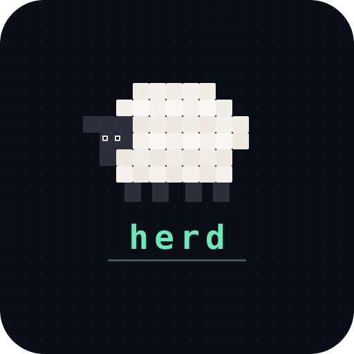

A fast, lightweight Windows CLI utility for multi-monitor setups. Gather scattered windows instantly. Undo anytime.
$ cargo install herd
Herd solves the one annoying problem every multi-monitor user knows — windows scattered across displays you've unplugged.
Run herd and every visible window moves to your primary display. One command, zero fuss.
Pick any monitor with --display N. Herd to your ultrawide, your portrait display, or whichever screen you need.
Every herd saves a snapshot. Run herd undo to restore all windows to their original positions and sizes.
Preview before you commit. --dry-run shows exactly what would happen without touching a single window.
Per-Monitor DPI v2 awareness means windows look right on mixed-DPI setups. No blurry text, no wrong sizes.
Only moves real app windows. Ignores system trays, desktop, UWP shells, and other background noise.
No config files, no setup. Just run the command you need.
$ herd ✓ Found 3 displays ✓ Moving 12 windows → Display 1 (primary) ✓ Snapshot saved Done! All windows herded 🐑
$ herd list Display 1 (primary) — 2560×1440 5 windows Display 2 — 1920×1080 3 windows Display 3 — 1920×1080 4 windows
# See what would happen, no changes made $ herd --dry-run [DRY RUN] Would move 8 windows "VS Code" → Display 1 "Firefox" → Display 1 "Slack" → Display 1 ...
--display N to preview targeting a specific monitor.# Restore windows to where they were $ herd undo ✓ Restoring 12 windows from snapshot ✓ "VS Code" → Display 2 ✓ "Firefox" → Display 1 Done! Windows restored to previous positions
Herd does one thing well today. Here's what's coming next.
Found a bug? Have an idea? Want to contribute? We'd love to hear from you.
Something not working right? Let us know.
💡Got an idea that would make Herd better?
🤝Check out the contributing guide to get started.